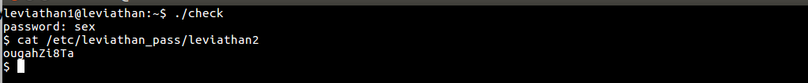

Leviathan Wargames!!!
When we login into next level we see a file with 'setuid' file permissoins.
Upon executing the file with commmand './check'. We are prompted for a password. So in this case will use the 'ltrace' command to see what libraries the file is calling. We see the file is comparing our entered string with 'sex', so it is the password.
When we enter the passowrd, We are given acces to the CLI from where we access the password for the next level. Command-'cat /etc/leviathan_pass/leviathan2'.
